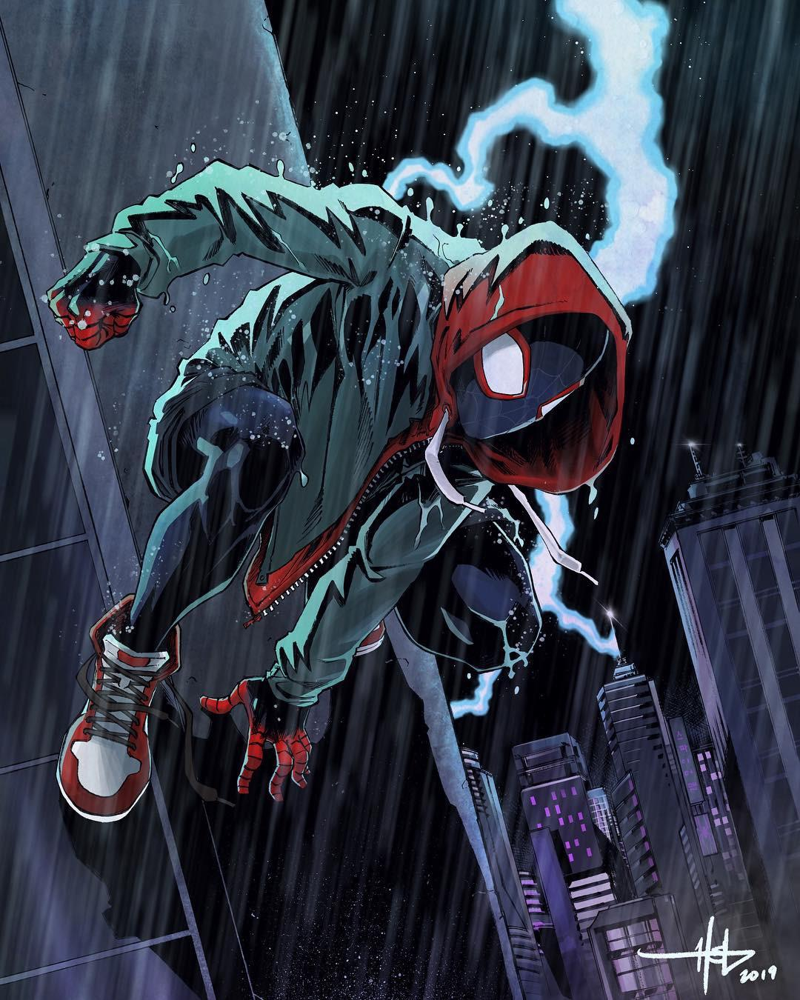

Message from Author
To all the hardcore Morales fans and to the Marvel comics readers, I will only refer to the character in the movie "Into The Spiderverse" as that is the only source I have about him. Some images may refer to the one in the game or in the comics. I hope you will forgive me for that.
About Miles
Miles Morales is a teenage boy who happened to be bitten by a radioactive spider. Sounds familiar... He gained a range of superpowers and inherited the gadgets from the previous spider man. Now he swings around New York's skyline while fighting bad guys. At the same time, he has to keep living the teenage life without revealing his vigilante background.
Miles in the storm
Miles' Powers:
- Stick to walls and ceilings
- Superstrenght
- Bioelectricity aka "Venom"
- Invisibility
- Spider Sense
Miles' Gadgets:
- Spiderman Costume
- Web Shooters